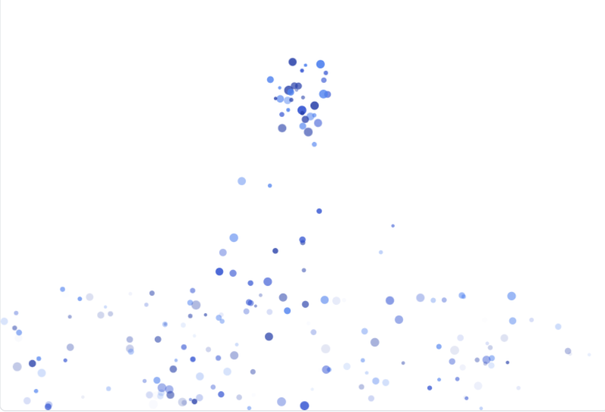
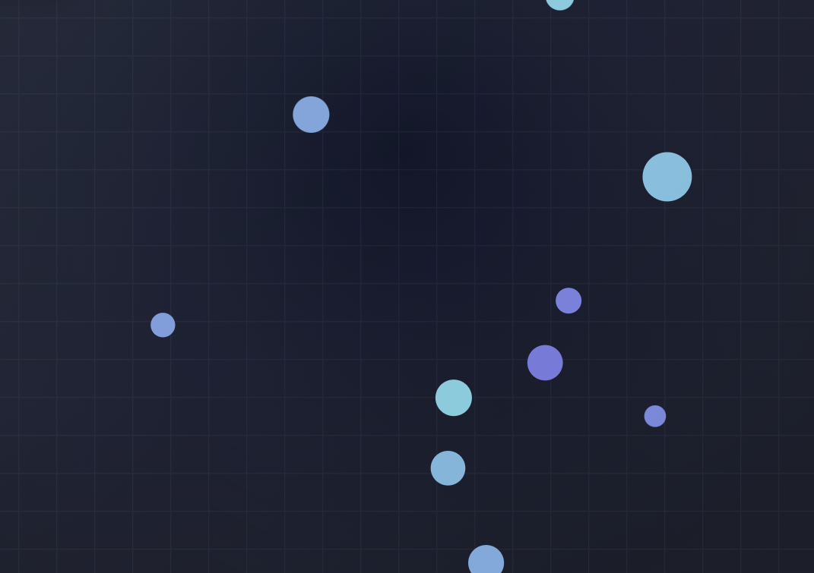
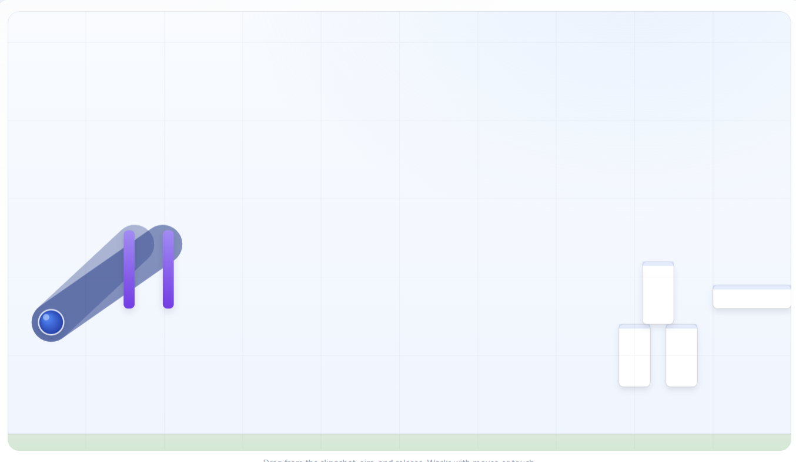

Featured Projects

Interactive Cursor Particle
Interactive physics engine with particle systems, gravity, and collision detection.

Aero Field
Interactive physics playground with wind, gravity, and bouncing effects.

Sling Shot
A fun physics-based slingshot simulation with realistic motion and collision effects. Perfect for exploring projectile motion and elasticity concepts.